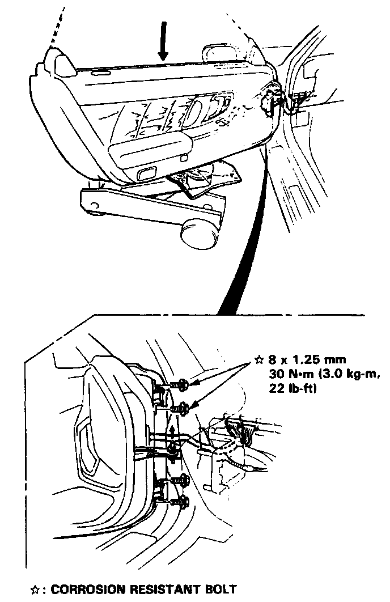

Removal and Replacement
REMOVAL
1. Lower the window fully.
2. Remove the seat.
3. Disconnect the door harness connectors.
4. Remove the door assembly by removing the hinge bolts, detent rod pin and pulling out the wire harness.
CAUTION: Place a shop towel and rubber pad on the jack to prevent damage to the door.

NOTE: Let an assistant hold the door.
5. Install the door assembly in the reverse order of removal.
NOTE: Adjust the door position.